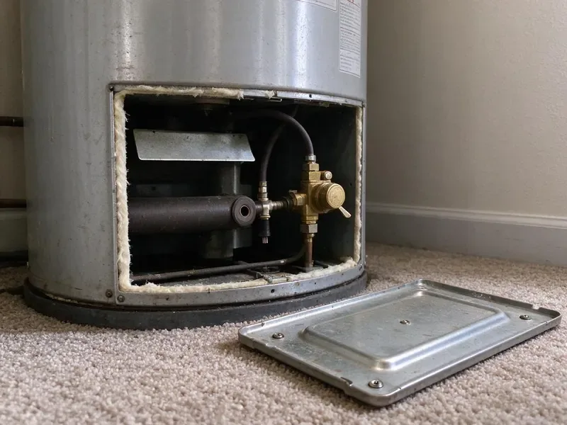

Gas Water Heater Repair in Albany, OR
Get hot water back fast with gas water heater repair in Albany, OR. We carry pilot assemblies and gas controls for the brands we see most often.
- Combustion Safety Checks
- Guaranteed Workmanship
- Upfront Quotes
- Guaranteed Work

Safe, prompt gas water heater repair from licensed plumbers in Albany, OR.
Call now and we will send a plumber with gas controls and pilot parts on board.
Licensed Gas Water Heater Repair Services in Albany, OR
At JFL Plumbing, we provide expert gas water heater repair services to keep your home in Albany, OR supplied with reliable hot water. From pilot light issues to thermostat malfunctions, our certified technicians are equipped to diagnose and fix a wide range of gas water heater problems with accuracy and care.
Our expertise includes:
- Addressing burner assembly and thermocouple issues
- Thermocouple, thermopile and pilot assembly replacement on sealed burners
- Repairing gas valve and thermostat malfunctions

Additional Plumbing Repair Services in Albany, OR
We offer expert plumbing repair services across Albany, OR to fix leaks, restore flow, and keep your system running smoothly.


Customers
Why Choose JFL Plumbing for Gas Water Heater Repair in Albany, OR?
We pride ourselves on clear communication and reliable service, making sure you understand the problem and the solution before any work begins.
- Gas Leak Testing, Every gas connection we touch is checked with an electronic detector and solution.
- Long-Term Fixes, Our repairs focus on durability and efficiency, saving you money in the long run.
- Local Expertise, We understand local Albany plumbing codes and common issues affecting Oregon water heaters.
Citywide Coverage
We repair gas water heaters throughout Albany, whether yours is in a garage, interior closet or exterior enclosure. Quick scheduling is available across town.
Experienced Team
The team has handled everything from basic pilot repairs to power vent motor replacements and flue corrections. That range means fewer unknowns on your service call.
Safety-First Approach
Safety is the top priority when working with natural gas appliances. All our gas water heater repairs in Albany, OR are performed strictly according to Oregon plumbing codes and manufacturer specifications, reducing any risks to your home and family.
Trusted Certified Albany Plumbing Services Professionals
At JFL Plumbing, we take pride in providing certified plumbing services throughout Albany, OR. Backed by recognized industry credentials, our experienced plumbers combine technical skill with genuine customer care. Whether it is repair, installation, or maintenance, we follow strict safety and quality standards to deliver lasting results you can trust.
Call Us Now PHCC Plumbing Contractor Recognition
PHCC Plumbing Contractor Recognition Better Business Bureau (BBB) Accreditation
Better Business Bureau (BBB) Accreditation Angi Certified Pro
Angi Certified Pro ISO 9001 Quality Management Certification
ISO 9001 Quality Management CertificationTrusted Gas Water Heater Repair Services in Albany, OR
Burner Cleaning and Repair in Albany, OR
A yellow, lazy or noisy flame points to a dirty burner or poor combustion air. We remove and clean the burner, check the orifice size for natural gas or propane and adjust as needed. A clean blue flame heats faster and produces less carbon monoxide. We also check for rust flakes falling from the flue.

Gas Water Heater Code Compliance in Albany, OR
Any repair involving gas appliances must follow strict local and state plumbing codes. JFL Plumbing ensures all gas water heater repairs in Albany, OR are performed in full compliance with current regulations. This includes proper venting, gas line connections and seismic strapping where applicable. Our attention to code ensures not only safety but also a smooth path through any future inspections.
Tank Leaks and Pressure Problems in Albany
Even gas water heaters can develop tank leaks, often due to corrosion from hard water or high water pressure. Soft water can be slightly corrosive, which may lead to pinhole leaks in copper pipe and blue-green stains on fixtures. While some leaks might require a replacement, minor leaks or pressure relief valve issues can often be repaired. Our team checks the extent of the damage, inspects the anode rod and addresses pressure imbalances to prevent further problems in your Albany home.
Restoring Hot Water for Older Homes in Albany
Many homes in Albany have older gas water heater models that require specialized knowledge for repair. Our technicians are familiar with the common issues and unique parts associated with these systems. We can troubleshoot and repair older units, often extending their lifespan, rather than pushing for instant replacement. We focus on cost-effective repairs that respect the history of your home.
Pilot Light & Burner Issues in Albany
A frequent problem with gas water heaters is a pilot light that won't stay lit or a burner that fails to ignite. This can be caused by a faulty thermocouple, a dirty pilot tube or issues with the gas control valve. Our technicians in Albany are skilled at diagnosing these components and performing the needed repairs, whether it is cleaning, adjusting or replacing parts. We confirm proper gas flow and ignition for consistent hot water.
Cost-Effective Gas Water Heater Solutions in Albany, OR
We always aim to provide the most cost-effective repair option for your gas water heater in Albany, OR. We give clear pricing before any work begins, so you know exactly what to expect. Sometimes a repair can extend the life of your unit by years, while other times replacement is the more prudent financial decision. We help you make the best choice.
Emergency Gas Water Heater Repair in Albany
When your gas water heater suddenly stops working, especially on a busy morning, it is an emergency. JFL Plumbing offers fast emergency repair services for gas water heaters in Albany. We put a priority on urgent calls to get your hot water back quickly, understanding that a lack of hot water is more than just an inconvenience.

Flammable Vapor Sensor Repair in Albany
Most gas water heaters built in recent decades have a flammable vapor ignition resistant design. A sensor or flame arrestor screen shuts the burner down if it detects vapors or overheating. Lint and dust in garages can clog the arrestor and shut down the system. We clean the combustion chamber and replace sensors or thermal switches as needed.
Gas Water Heater Repair Near Me in Albany, OR
For reliable gas water heater repair near me in Albany, OR, JFL Plumbing is your go-to local expert. Our technicians are based throughout the area, allowing for quick response times when you need us most. We understand the plumbing challenges faced by Oregon homeowners.
Garages collect dust and lint that cause gas water heaters to shut down. Our team knows how to clean and protect these units in local conditions. That means fewer pilot outages after the repair.
JFL Plumbing at a Glance
- Fully licensed plumbing team covering Albany, OR
- Same-day appointments and 24/7 emergency response
- Clear written estimates, no hidden fees
- 4.8-star rated by 657+ Oregon customers
Albany Map
Albany Information
- Population
- 57,053
- Area codes
- 541/458/971
- Service area
- Albany and communities within 40 miles
- Nearby
- Corvallis, Salem, Keizer, Eugene
Garage gas water heaters in Albany, OR pick up dust, lint and sediment that set off safety sensors and wear out burners, so thorough repair keeps hot water steady and combustion safe.
Expert Services
Trust our professionals for reliable JFL Plumbing solutions in Albany, OR.
Our Specialized Plumbing Services in Albany, OR
At JFL Plumbing, we provide a complete range of plumbing services across Albany, OR. From leak detection to full system installations, our team ensures fast, precise, and affordable service for both residential and commercial properties. Explore our core services below:


How Our Gas Water Heater Repair Process Works in Albany, OR
From your initial call to the completed repair, JFL Plumbing follows a careful approach so your gas water heater repair in Albany, OR is thorough and effective.
Request a Quote
Call (971) 333-7694 and describe what is happening, such as no pilot, a status light blinking or a gas smell. If you smell gas, leave the home first and call your gas company.
Inspect and Diagnose
We test the pilot, thermocouple, gas valve, burner and venting. You get a flat price for the repair before we begin.
Repair and Safety Test
We replace the failed parts, light the unit and run it through a heating cycle. Gas connections are leak tested and draft is confirmed.
Frequently Asked Questions About Gas Water Heater Repair in Albany
The cost of gas water heater repair in Albany, OR can vary a lot depending on the issue. Minor repairs like a thermocouple replacement might range from $150 to $350, while more complex issues such as a gas valve replacement could be $400 to $800 or more. We always provide a detailed, upfront estimate once we diagnose the problem.
Replacing a part like a thermocouple or gas valve typically does not. Replacing the water heater or altering gas piping or venting often requires a permit, which we take care of.
Because of the dangers that come with natural gas and possible carbon monoxide poisoning, gas water heater repairs should always be handled by a licensed professional. DIY attempts can be dangerous and may void warranties or violate local Albany, OR plumbing codes.
We repair Rheem, Ruud, A.O. Smith, State, Bradford White, American Standard and Whirlpool gas tanks, among others. We carry common pilot and valve parts.
On average, a well-maintained gas water heater can last between 10 to 12 years. Regular maintenance, including flushing the tank, can help extend its lifespan. If your unit is nearing this age and having frequent issues, replacement might be more cost-effective than continuous repairs.
JFL Plumbing stands behind our work. All gas water heater repairs performed by our technicians come with a warranty covering both parts and labor. We will provide specific warranty details at the time of service, giving you peace of mind.
Most common gas water heater repairs can be finished within 1 to 3 hours. More complex issues, or cases where special parts need to be ordered, could extend the timeline. We strive for efficiency without compromising safety or quality.
If you smell gas, leave your home right away, do not turn any lights or appliances on or off, and call your gas company's emergency line and then JFL Plumbing from a safe location. This points to a potentially dangerous gas leak that requires immediate professional attention.
What People Are Saying About Our Plumbing Experts?

Sofia M.
Two new toilets installed in one visit, no mess left behind, and the tech even adjusted a faucet he noticed was dripping. Fair pricing and really friendly.
Toilet Installation · Salem, OR
Daniel K.
A pipe burst at 11 pm and they actually answered. The plumber showed up within the hour, shut everything down, and had us back to normal the next morning. Could not ask for more.
Emergency Plumbing · Keizer, ORLaura S.
I scheduled a water heater replacement, and the team made the process smooth and affordable. The new unit works perfectly, and they cleaned up after completing the job.
Water Heater Replacement · Albany, OR
Robert G.
The trenchless sewer replacement saved our front yard. They walked us through the camera inspection footage first so we knew exactly what we were paying for.
Sewer Line Replacement · Salem, OR
Emily R.
I called JFL Plumbing for plumbing repair, and the technician was fast, polite, and thorough. They explained the problem clearly and fixed it the same day. I will definitely hire them again. Highly recommended!
Plumbing Repair · Eugene, ORJames P.
Our commercial plumbing system had a leak under the sink, and JFL Plumbing handled it professionally. The plumbers arrived quickly and restored everything without disruption to our customers.
Commercial Plumbing · Keizer, OR